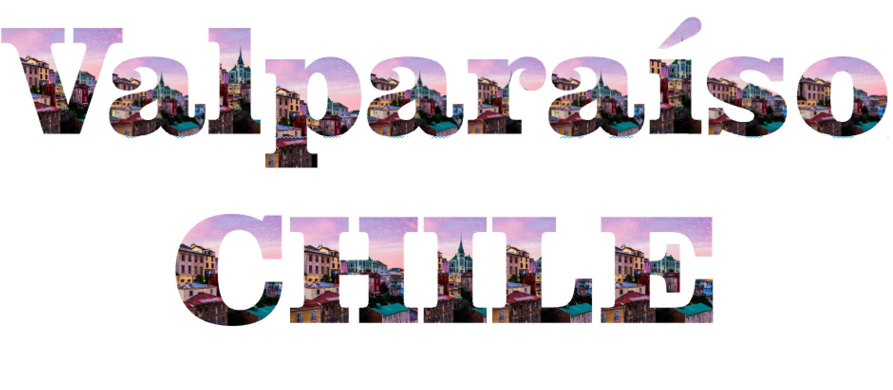

Being an undergraduate computer science student at a well known research institution is great, but there are some struggles when it comes to study abroad. For example, participating in research and then leaving for an entire semester is not feasible to me. Pushing my course load back to miss required courses is also not feasible. My latest endeavor involves prepping for a 6 week trip to live in Valparaiso, Chile. Somehow, I managed to win the best of both worlds in terms of research in my major and studying abroad.

More on the research part later...because this blog post is under the travel category. I have studied abroad before, but it was for a quick 10 days in Costa Rica on guided tours and travel with three other students and my professor. This summer will be a whole new experience for the books. This study abroad trip will be full of learning opportunities. I will be doing a homestay for the six weeks that I am in Valpo with a Spanish speaking family. Yes...that means I have to become more or less fluent in Spanish ASAP!
After going to Costa Rica for ten days over Spring Break my freshman year of college, I encourage everyone I meet to go abroad whether it is for study or for vacation. Being exposed to new ideas, different cultures, and faced with challenges helps you grow as a person that this world needs. If you think studying abroad is impossible with your major or your coursework, then you are searching hard enough. I guarentee you that if you want to go abroad, it is possible. I am a computer science major and getting a certificate in sustainability...and I will have studied abroad twice by the time I graduate.
I'm no professional at traveling nor has my education prepared me for what I am going to encounter while abroad. While I will be traveling to perform research, there are going to be several things I need to learn in order to travel "like a professional". I think as I continue to grow, I am getting better at being self aware. However, traveling (especially in South America) can be dangerous.
One thing about traveling that I have down is the energetic attitude. I am really really good at talking to strangers...it is an odd talent and I think it is one of my favorite talents. However, going to another country I will have to stay aware of what strangers I interact with for safety. Any traveler should do this when traveling anywhere. Another thing to keep in mind is that you are traveling to represent your university, so you should travel "like a professional". Remember to keep you eyes on the prize...in this case a publishable research paper and fluency in Spanish. Here's to the next 5 months of forcing Spanish grammar and vocabulary in my mind...
>